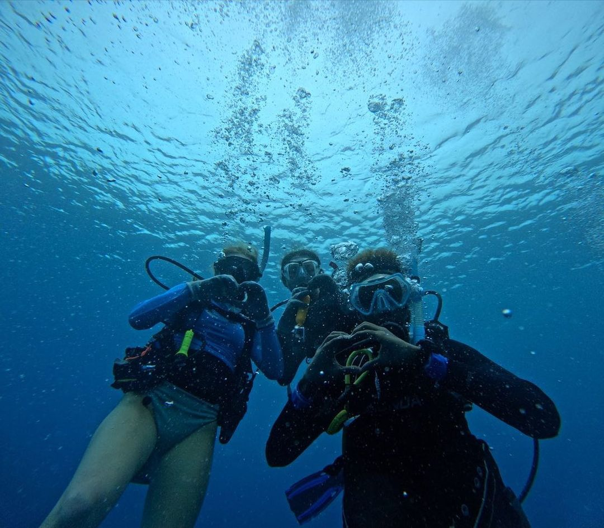
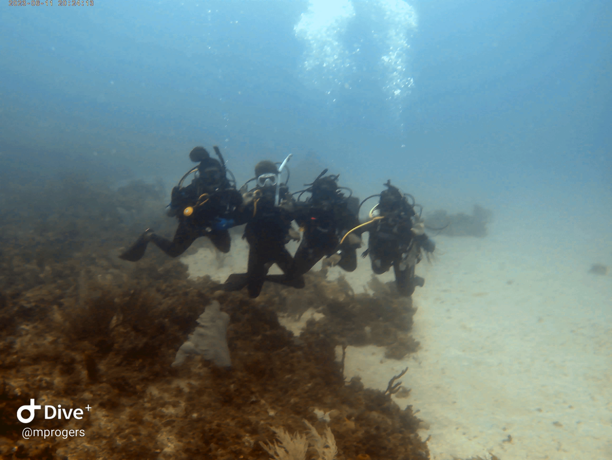
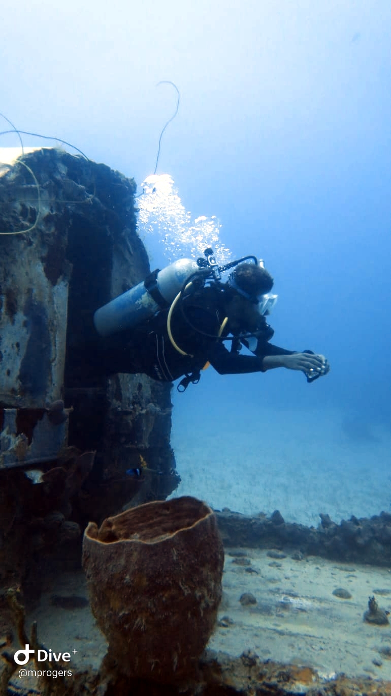

I Love Diving
I Love Diving
When I talk about being a marine biologist one common question I get is if I scuba dive.
In short, the answer is yes.
Of course, that opens the door to a whole lot of questions, questions I love to answer, because I love diving. This post is to answer some of the frequent questions I get, and demystify scuba diving a little bit in the process. I hope you’ll leave with better knowledge of scuba, get a feel for why I love it, and maybe want to try it yourself.
Why Dive?
Our lovely planet ’s surface is about 70% covered by water. There is more water covering the Earth than land. Which means a lot of the wonderful natural world that I (and people like me) want to see is underwater. At our best, us humans can only dive for a few minutes. I will humbly and honestly admit I am not among those best. (Although I would love to do more freediving in the future.)
So, that means those of us who want stay down there for longer than a few minutes need special gear and special training. This is where scuba comes in. Scuba is technically an acronym (self contained underwater breathing apparatus). In practice, Scuba is gear that lets you carry gas underwater, and breathe it to stay underwater for longer.

Of course, to use this equipment, you need some special training. Some is theory, to help you understand your gear, and what happens to your body as you dive. The rest is practical. For many, this is where they take their first breath underwater and get addicted forever.
There’s a number of organisations that can teach and certify you to dive. Some are PADI, SSI and NAUI, but rest assured there are several more.
Why Do I Dive?
I’m addicted. That’s the long and short of it. I love diving. Sure, I’ve had to (and will have to) dive for work. But even if work no longer required it , I would still dive. Here’s a very short list of the top 3 reasons I dive:
1. It’s beautiful and calming
2. It’s a Social Activity
3. There’s always something new to see.
The underwater world is absolutely stunning. It’s so unlike what we see at the surface some people say it feels like a whole other world. And yet most of our world is underwater like this.
On top of that, diving has the unique position of being a social activity where there’s no speaking (some of my favourite people I met last year, I met diving. ) There’s plenty of communicating and speaking above the water, but once you descend, you enjoy the underwater world with your buddies without words.

And even having dived the same sites multiple times, there’s always some new wildlife, some new change, something new to notice. Every dive, in its own way, is an adventure into a world most people will never be able to see unless they become divers too.
How Do I Learn to Dive?
You find an instructor and learn to dive.There are quite a few organisations as I listed above, but they are all “roughly” the same. If your instructor is good, your training will be good, no matter the organisation.

It’s obviously a paid course, and not necessarily a cheap one. On top of that, to my great pain, dive gear is expensive. But you need not buy it all at once doing your course. There’s benefits to having your own gear, namely building up familiarity with it. But a lot of gear works the same, and a lot of places where most people dive will carry rental gear. You don’t need to buy a full set to start.
If you ask me, you are probably good with no more than a good mask and fins. (and that’s mostly for hygiene and comfort reasons. You don’t need any gear to start.
Then, do your course. It’s not difficult and doesn’t need to take more than a week. There’s a theory component where you learn about your gear, and how your body responds to going underwater. Then there’s a set of confined water dives in some calm sheltered water(a pool is often, but not always used here), Then a couple open water dives and you’re clear to go.

Then comes the final and most important part. Dive often, make diver friends and enjoy the ocean and ocean lovers together.
There’s lots of diving for lots of people. So be safe, but try new things to see what you like best. One of my favourite dive activities is identifying marine life, but I know people who live for wrecks or spearing lionfish on their dives.
What Kind of Diving is in your future?
As for me, I’m currently a PADI Advanced Open Water Diver. That’s my current highest level of certification, but its not where I intend to stop. After some more diving, and building more experience, I plan to level up and advance my certification to Rescue Diver. I’m considering stopping there for a while. After that, the only certification I’d be in a rush to get is my Nitrox certification.
Rescue diver training helps build up independence in the water, and the ability to better deal with problems as the occur on and under the water. Nitrox teaches a diver how to (safely) use different gas mixtures to change the depth and time they can dive to.
But I have a ton more diving dreams. One of my big ones is to go on a liveaboard, which is essentially a dive cruise. A special boat, one part dive boat-one part hotel, travels around to some great divespots with a team of likeminded divers. It’s been a big dream of mine to go on one ever since I found out they existed.

Another is more dive vacations. I’ve only dived in Jamaica so far, but I want to do the rest of the Caribbean and worldwide in the tropics eventually. Whether or not I go anywhere colder remains to be seen.

Finally, I want to see (and photograph), more marine life. Manta’s are the one animal I’m most looking forward to, but in truth I just want to see more, and experience more under water.
Wrapping Up
So, now you know a little bit more about why I dive, how to get started, and the dreams I have for my diving future. Diving is definitely one of my favourite parts of being a marine biologists, and one of my favourite activities in general. I’m glad to be able to share the word and hopefully inspire a new diver or two. I’d love to dive with you someday too.
If you’re in Jamaica, many resorts offer some quick training and certification. I also strongly recommend Yardie Diver’s who offer good training, and excursions where you can try scuba diving to see if its right for you. You can also try out Lady G’Diver in Portland. These dives shops are also great places to meet divers, and get diving done after you’re certified.
Walk good and happy diving.